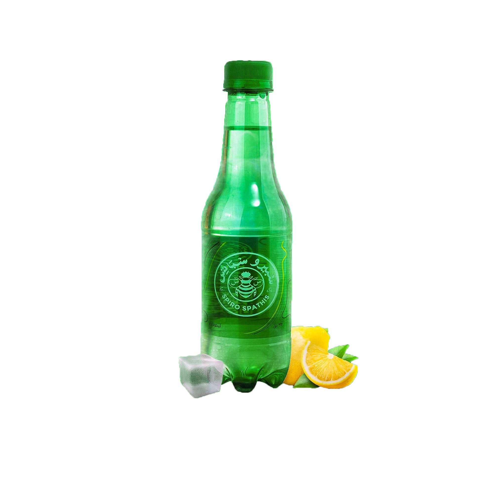

It's not just a Drink
It's Spiro Spats
Spiro Spathis is a carbonated soft drink manufactured by Spiro Spathis. Which was originally created and developed in 1920 by a Greek man named Spiro Spatis, who was born in 1882 AD and then came to Egypt at the age of 15 years during the monarchy period and was presented with the same name, which reappeared again in the spotlight after campaigns to boycott foreign products and encourage Egyptian products on social media sites. Social Affairs in the wake of the Al-Aqsa Flood.
Learn More
